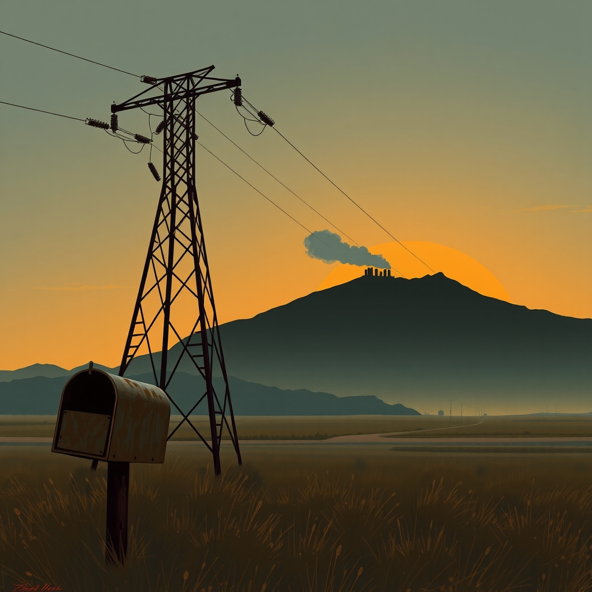
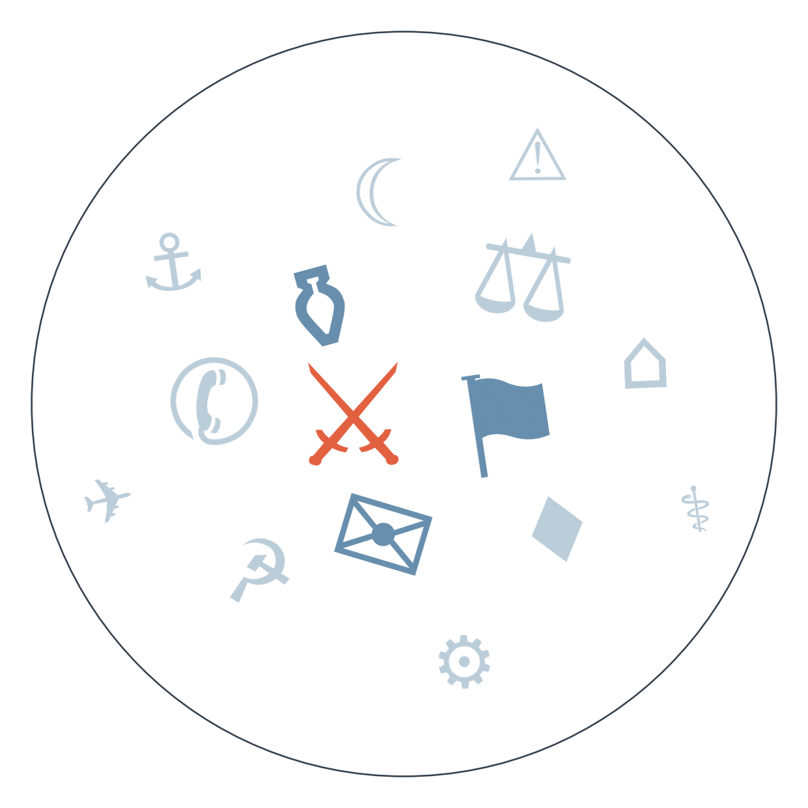

Ранковий бріф · огляд світової преси

Отже, дипломатія знову рухається, і знову з тим самим присмаком дежавю. Спецпредставники Трампа Стів Віткофф і Джаред Кушнер цими вихідними летять спершу до Москви, потім уперше з початку війни — до Києва, з тим, що Трамп назвав "ідеєю миру". Зеленський заявив, що Україна не битиме по РФ на час візиту й чекає того ж від росіян — але вже за кілька годин російський дрон влучив у будівлю СБУ в центрі Києва, у кабінет виконувача обов'язків керівника служби, є поранені. Це найкраща ілюстрація стану перемовин: слова про паузу і дії, що її не визнають (триває: дипломатичні спроби завершення війни в Україні).
Тим часом завтра в Саксонії-Анхальт вибори до ландтагу, і за опитуваннями АфД може вперше в історії ФРН взяти владу на рівні землі одноосібно. Це станеться на тлі щойно затвердженого скорочення 50 тисяч робочих місць у Volkswagen — символічний збіг деіндустріалізації та радикалізації електорату (триває: деіндустріалізація автопрому Німеччини). Якщо АфД справді набере абсолютну більшість, це змінить не лише розклад у бундесраті, а й тон, яким Берлін говоритиме про санкції та підтримку України.
В Україні НАБУ та САП провели спецоперацію під назвою "Карфаген": обшуки в офісі генерального прокурора, викрито мережу шахрайських кол-центрів, яку, за версією слідства, "кришував" посадовець самої генпрокуратури. Це другий за тиждень сигнал про те, що антикорупційні органи діють незалежно навіть від найвищих кабінетів — і для західних партнерів це аргумент на користь довіри, попри одночасний галас довкола нинішньої війни інституцій.

Сюжет перший: вибори в Саксонії-Анхальт.
Замовчують: як гіпотетична перемога АфД вплине на позицію Німеччини щодо санкцій проти Росії й підтримки України — це напряму не пов'язує жодне з проаналізованих джерел.
Чому розходяться: французька преса шукає паралелі з власною політичною сценою й персоналізує загрозу; німецька Die Zeit б'є на сполох, бо для власної аудиторії це пряме порушення повоєнного табу; британська BBC зберігає дистанцію зовнішнього спостерігача, якому нема чого втрачати внутрішньополітично; угорська HVG, сама пов'язана з правим урядом, іронізує над сусідами, бо це зручніше, ніж дивитися на власний табір.
Сюжет другий: погроза Трампа щодо іранської "гори Пікекс".
🇮🇷 IRNA (офіційна іранська рамка, з посиланням на переказ New York Times): подає це як визнання чужим виданням — мовляв, Іран "здобув упевненість" у протистоянні США, обертаючи загрозу на доказ власної сили.
🇮🇷 Iran International (опозиційне видання у вигнанні): переказує слова імама п'ятничної молитви Куму про те, що "США не знайомі з новими методами партизанської війни" — і подає це як пропагандистське хизування режиму, а не як реальну оцінку.
Замовчують: що конкретно є ціллю на самій горі й чи є там взагалі активність — жодне джерело не деталізує, лишаючи погрозу максимально абстрактною.
Чому розходяться: Al Jazeera балансує між аудиторіями Затоки й тримає нейтралітет; державне IRNA обирає вигідну цитату із чужого видання, аби показати образ сильного Ірану; опозиційне Iran International висміює риторику режиму зсередини; ізраїльський Kan 11 транслює позицію власної розвідки, зацікавленої в образі Ірану як загрози, що виправдовує тиск.
Гібридна війна проти Європи: сьогодні поліція фіксує вже третю спробу атаки на трансформаторну станцію в Дормагені й штурмує авто підозрюваного → найближчі дні Польща вимагає масового видворення російських дипломатів по всьому ЄС → веде до нового пакету санкцій ЄС або першого офіційного звинувачення Берліном Москви — чого якісні німецькі медіа поки уникають.
Німеччина: автопром і радикалізація сходу: нещодавно наглядова рада Volkswagen затвердила скорочення 50 тисяч робочих місць → завтра Саксонія-Анхальт може вперше в історії ФРН передати владу крайнім правим одноосібно → очікування профспілка IG Metall, за нашим прогнозом, може розгорнути протести проти заводських скорочень → веде до того, що Мерцу доведеться перераховувати коаліційну арифметику в бундесраті ще до федеральних розкладів сил.
Дипломатія навколо України: сьогодні Віткофф і Кушнер летять до Москви й уперше — до Києва з новим планом, обидві сторони синхронно призупиняють удари → паралельно удар по будівлі СБУ ставить під сумнів реальність паузи → веде або до підтвердження дати саміту, або до того, що напередодні голосування ЄС 17 вересня Берліну доведеться визначатися, чи послаблювати санкційну риторику.
США: несподівано сильні дані по зайнятості зміцнюють аргументи за підвищення ставки ФРС на засіданні 12 вересня, і Трамп тим часом продовжує публічно тиснути на регулятора, вимагаючи протилежного — зниження.
Португалія: агентство Fitch підвищило рейтинг країни до A+, відзначивши скорочення держборгу — рідкісна для єврозони новина про фіскальне покращення.
Світові ціни на продовольство зросли до найвищого рівня з 2022 року — позначились і війна на Близькому Сході, і екстремальна погода.
Мексика: торговельний розрив зі США продовжує зростати, тиснучи на дрібний бізнес обабіч кордону.
Якісна преса подає провал суду над Ліндсі Клансі (жінка, яка задушила трьох своїх дітей на тлі післяпологового психозу) стримано — як юридичний факт: журі не дійшло згоди, суддя оголосив недійсний процес. Daily Mail натомість розганяє історію емоційно: реакція прокурора на протестувальників, коментар самого Трампа, і паралельно — інша справа матері із Середнього Заходу, яка нібито "таврувала" сина "антихристом". Різниця в тоні — це різниця між юриспруденцією і драмою на публіку.
Bild тим часом подає вбивство двох людей у Гамбурзі як прибуття "кілер-командо" з відеозаписами наживо, тоді як якісні німецькі видання цю історію взагалі не піднімають у топ. А монументальну будівельну амбіцію Трампа — "Арку Трампа" до 250-річчя США — Bild перетворює на курйоз про сварку з виробником Tetris, тоді як Der Standard бачить у цьому спробу самому собі поставити пам'ятник. Bild також повідомляє, що німецьке генконсульство в Бонні могло використовуватися для розвідки та диверсій — версія, яку якісні німецькі видання поки не підтверджують.
Візит Віткоффа й Кушнера та синхронна пауза в ударах — це перевірка того, чи готові сторони бодай символічно синхронізувати дії; провал паузи (як показав удар по СБУ) знижує шанси на швидкий прогрес до саміту.
Операція "Карфаген" проти корупційної мережі в офісі генпрокурора працює на репутацію України перед партнерами саме в момент, коли обговорюється розблокування заморожених кредитів і нові транші допомоги.
Німецьке генконсульство в Бонні, за повідомленнями ЗМІ, могло використовуватися для розвідки та диверсій у Європі — і будь-яке рішення Берліна щодо нього стане тестом того, наскільки серйозно Європа готова відповідати на гібридну війну, від якої прямо залежить стабільність постачання зброї Україні.
Тибетська статистика жертв гімалайської повені досі не опублікована окремо від загальнокитайської — мовчить конкретно Пекін, і причина очевидна: окрема цифра по Тибетському автономному району означала б визнання масштабу лиха в чутливому регіоні, чого офіційна лінія уникає вже понад тиждень.
Хто саме замовив третю спробу саботажу підстанції в Дормагені (див. ЩО З ЧОГО ВИПЛИВАЄ) — тема, яку системно оминають найякісніші німецькі медіа (Spiegel, FAZ, Tagesschau): вони описують факт атаки, але уникають прямо називати Росію, хоча польська й шведська преса вже це роблять відкрито — обережність, що диктується політичною ціною звинувачення без суду.
Операцію "Карфаген" проти корупції в офісі генпрокурора сьогодні, за нашим моніторингом іншомовних медіа, активно переказують лише білоруські державні та російські незалежні (у вигнанні) видання — великі західні редакції в дайджесті цю новину практично не підхопили, бо увага повністю зміщена на дипломатичний візит Віткоффа й Кушнера.
Середня впевненість: синхронна пауза в ударах Україною й Росією на час візиту американських переговорників може означати підготовку конкретної пропозиції для обговорення на найвищому рівні, а не просто жест доброї волі. Ґрунтується на заявах Зеленського в переказі кількох східноєвропейських видань.
Низька впевненість: загострення довкола Фолклендів може перерости в новий дипломатичний конфлікт Вашингтона з Лондоном, якщо Трамп справді перегляне позицію США щодо суверенітету островів. Ґрунтується на одному переказі (Zerkalo) слів самого Трампа плюс будівництво нової бази Мілеєм.
Середня впевненість: юридична битва довкола поштового голосування в США переросте у затяжний судовий конфлікт, що вплине на явку й легітимність результатів проміжних виборів. Ґрунтується на кількох незалежних джерелах (Guardian, Politico, The Hindu, Mint).
Рахунок: 1 з 4 — до вже відомого підсумку (1 з 3: не справдився референдум в Ісландії, справдилась дата похорону короля Норвегії, не пролунала спільна заява ШОС) додається: прогноз про нові санкції Німеччини проти Росії понад закриття консульства в Бонні (горизонт 05.09.2026,, базово 50%) — не справдився, у сьогоднішньому дайджесті йдеться лише про повідомлення Bild про можливе використання консульства для розвідки, без анонсу нових санкцій
Наші:
Малі партії в Саксонії-Анхальт заблокують АфД від формування уряду навіть у разі перемоги партії на виборах — до 20.09.2026
Німеччина оголосить конкретні заходи (перевірку, закриття чи обмеження роботи) щодо консульства РФ у Бонні після повідомлень про можливу розвідувальну діяльність — до 19.09.2026 (друга ставка на цей сюжет після того, як попередній прогноз про санкції щодо консульства не справдився)
Справа "Карфаген" НАБУ/САП призведе до затримання чи відставки посадовця рівня заступника генпрокурора України, а не лише рядового співробітника — до 19.09.2026
Решта активних прогнозів (обмін ударами США-Іран, тристоронній саміт Путін-Трамп-Зеленський, продовження санкцій ЄС, звернення Саудівської Аравії до РБ ООН, кадрові зміни в Естонії, протести IG Metall, слухання Конгресу щодо удару по весіллю, рішення Південної Кореї щодо Ормузької протоки, підвищення ставки ФРС, законопроект Демократів проти перейменування Lake Ontario, державний похорон Ратка Младича) — без змін, горизонти ще не настали.
Кажуть інші:
Дональд Трамп: удар по іранській "горі Пікекс" можливий "дуже скоро", конкретної дати не назвав.
Американська розвідка (за переказом NYT/Haaretz): Іран прагне загострити конфлікт саме до проміжних виборів у США в листопаді.
Аналітик (Focus Taiwan CNA): наступну зустріч Трампа й Сі визначатимуть внутрішні потреби Китаю, а не міжнародна повістка денна.
Базова лінія у прогнозах. Відсоток «базово» — це ймовірність події за інерцією, якщо ніхто нічого не робитиме й нічого не зміниться. Друге число — наша впевненість. Прогноз має сенс лише тоді, коли ці числа розходяться: збіг означає, що ми просто описали поточний стан.
Відсотки в карті уваги. Частка країни в денному обсязі зібраних матеріалів. Не показник важливості події, а показник того, скільки місця країна зайняла в новинному потоці за добу. Різкий стрибок частки зазвичай означає, що в країні щось відбувається.
Стрічки, які не відповіли. Не відповіли: Milenio (API порожньо)